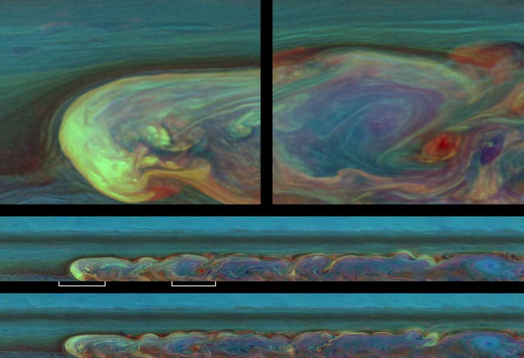
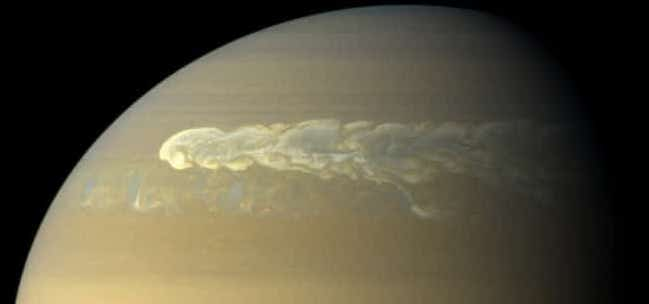

Атмосфера и температура планеты Сатурн
Внешний слой атмосферы Сатурна на 96.3% состоит из молекулярного водорода, а на 3.25% из гелия. Также есть и более тяжелые элементы, но об их пропорциях мало информации. В небольшом количестве найдены пропан, аммиак, метан, ацетилен, этан и фосфин. Верхний облачный покров представлен аммиачными кристаллами, а нижний – гидросульфидом аммония или водой. УФ-лучи приводят к металиновому фотолизу, что вызывает химические реакции углеводорода.

Атмосфера выглядит полосатой, но линии ослабевают и расширяются к экватору. Присутствует раздел на верхний и нижний слои, отличающиеся по составу на основе давления и глубины. Верхние представлены аммиачным льдом, где давление – 0.5-2 бар, а температура – 100-160 К.
На уровне с давлением в 2.5 бар начинается линия ледяных облаков, которая тянется до 9.5 бар, а нагрев составляет 185-270 К. Здесь смешиваются полосы гидросульфида аммония при давлении в 3-6 бар и температурой – 290-235 К. Нижний слой представлен аммиаком в водном растворе с показателями 10-20 бар и 270-330 К.
Иногда в атмосфере формируются долгопериодические овалы. Наиболее известное – Большое Белое Пятно. Создается каждый сатурнианский год в период летнего солнцестояния на северном полушарии.
Пятна в ширину способны простираться на несколько тысяч км и отмечались в 1876, 1903, 1933, 1960 и 1990 годах. С 2010 года велось наблюдение за «северным электростатическим возмущением», замеченным Кассини. Если эти облака придерживаются периодичности, то в следующий раз отметим появление в 2020-м году.

По скорости ветра планета стоит на втором месте после Нептуна. Вояджер зафиксировал показатель в 500 м/с. На северном полюсе заметна гексагональная волна, а на южном – массивный струйный поток.
Впервые шестиугольник разглядели на снимках Вояджера. Его стороны простираются на 13800 км (больше земного диаметра), а оборот структуры происходит за 10 часов, 39 минут и 24 секунд. За вихрем на южном полюсе наблюдали в телескоп Хаббл. Здесь отмечается ветер с ускорением в 550 км/ч, а буря по размеру напоминает нашу планету.